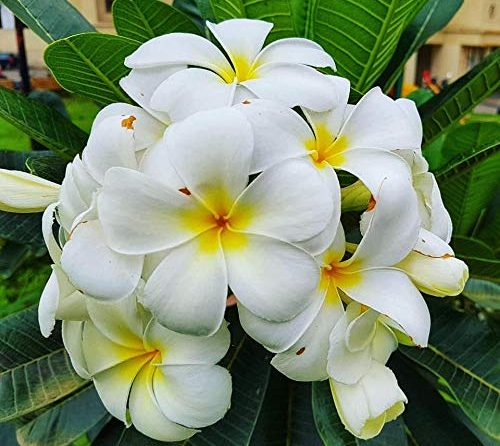

Champa (Plumeria)
Scientific Name: Plumeria spp.
Description: Champa, commonly known as Plumeria, is a tropical plant widely appreciated for its fragrant flowers. The plant is characterized by its glossy, elongated leaves and clusters of beautiful, fragrant flowers that range in color from white to pink, yellow, or red.
Care Tips:
- Water: Water the plant thoroughly and allow the soil to dry out slightly between waterings. Overwatering can lead to root rot.
- Light: Prefers full sun or partial shade. Ensure it gets plenty of sunlight for healthy blooms.
- Temperature: Best suited to warm tropical climates with temperatures ranging from 70°F to 85°F (21°C to 29°C).
- Humidity: Likes higher humidity, but can tolerate average humidity levels.
Medicinal Uses:
Champa has several medicinal uses in traditional practices. It is believed to have anti-inflammatory, antimicrobial, and antioxidant properties. The flowers are sometimes used to prepare herbal teas or topical oils, which are said to soothe skin irritations and reduce inflammation. Additionally, the plant's roots, bark, and leaves have been utilized in various cultures for treating ailments like fever, headaches, and even as a natural remedy for coughs.